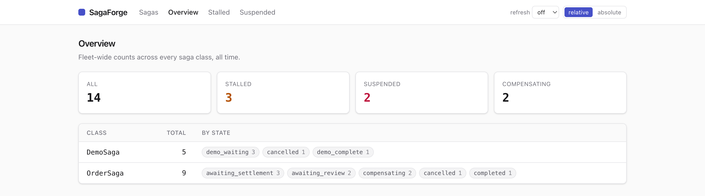
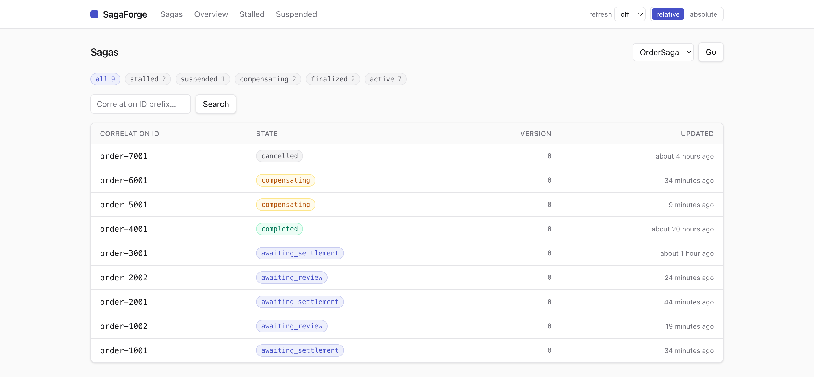
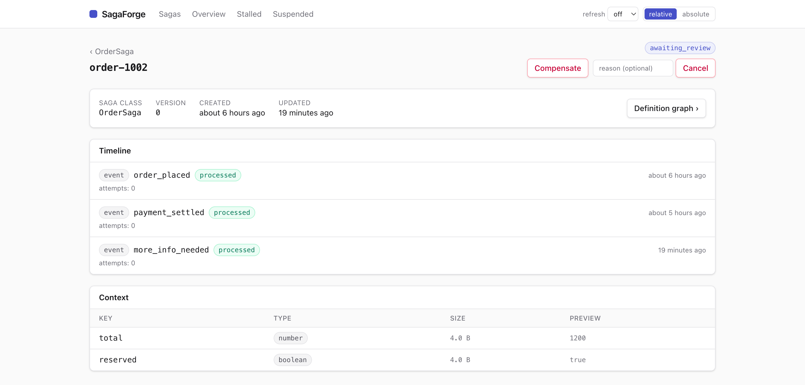
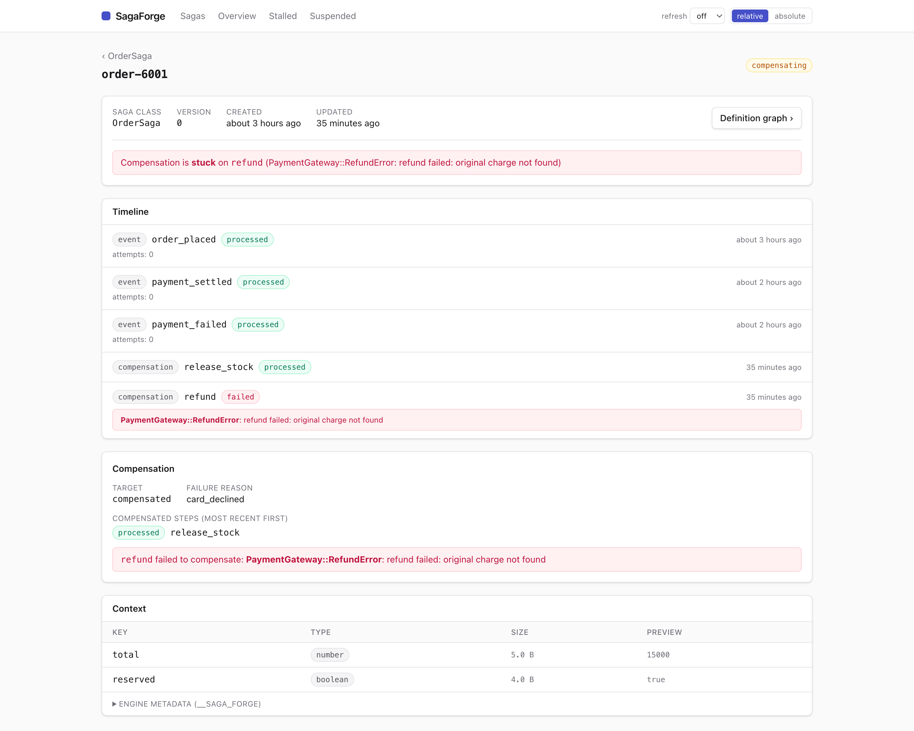
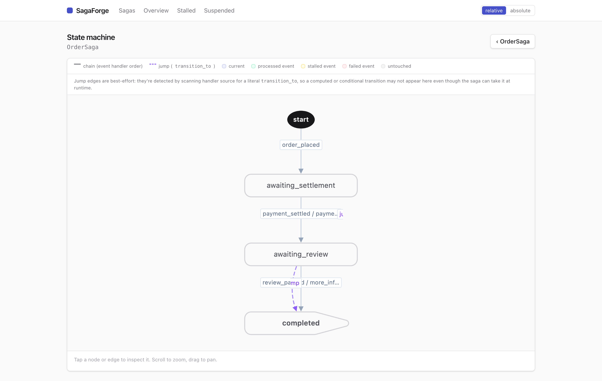
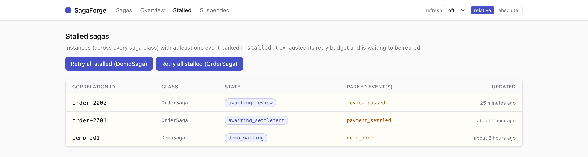
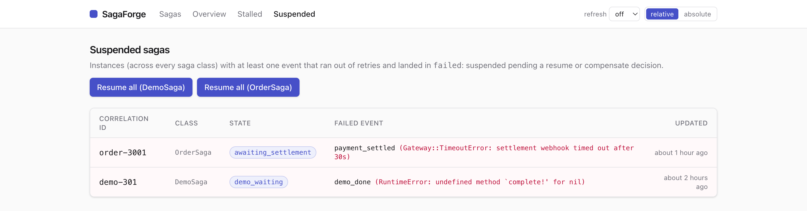

click anywhere or press Esc to close
A mountable Rails engine for visibility and recovery. It reads the durable event ledger every saga writes as it runs, and adds the controls to act on what it surfaces.
Ships as a separate gem, saga_forge-dashboard, so the core stays lean. See the dashboard README for setup, authentication, and configuration.




release_stock ran but refund exhausted its retries mid-rollback: the banner names where it's stuck, the timeline inlines the error on the failed compensation, and the Compensation panel lists the compensated steps most-recent-first.
transition_to jumps detected in the handler source. Node status paints on when viewed for a specific run.
stalled — it exhausted its retry budget and is waiting to be retried, the classic out-of-order arrival that parked until its state was reached. Per-class Retry all stalled re-enqueues the parked work in one background sweep.
failed halts its one saga instance, not the fleet. Each row names the failed event and error; after the fix, Resume all re-fires them, or an instance can be compensated instead.